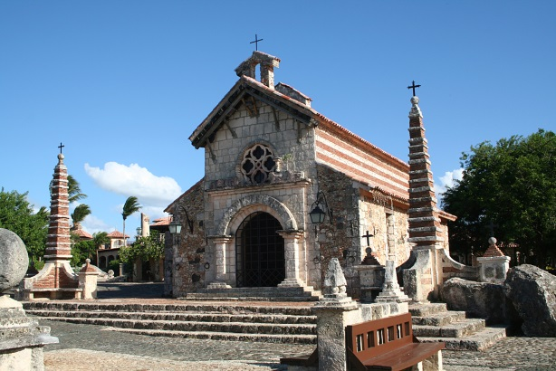

Altos de Chavon is a re-creation of a Mediterranean style European village located atop the Chavon River in La Romana, Dominican Republic. It is the most popular attraction in the city and hosts a cultural center, an archeological museum, and an amphitheater. The project was conceived by the Italian architect Roberto Copa, and the industrialist Charles Bluhdorn.
Casa de Campo is the biggest resort in the Carribean. For more information visit www.casadecampo.com.do.
